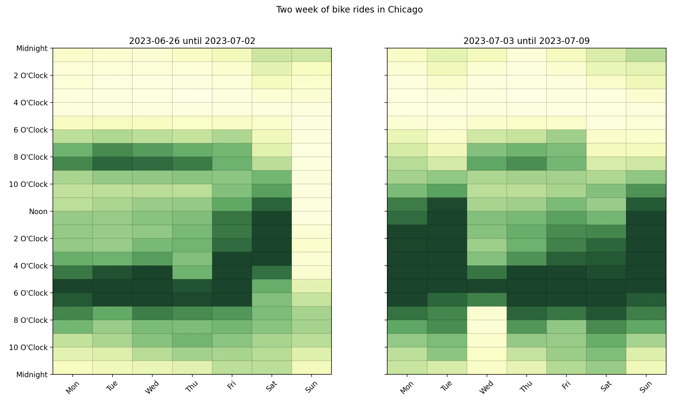
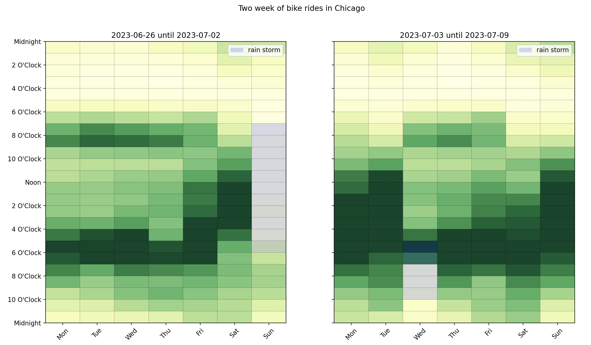
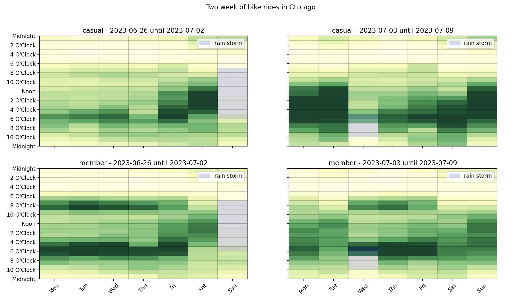
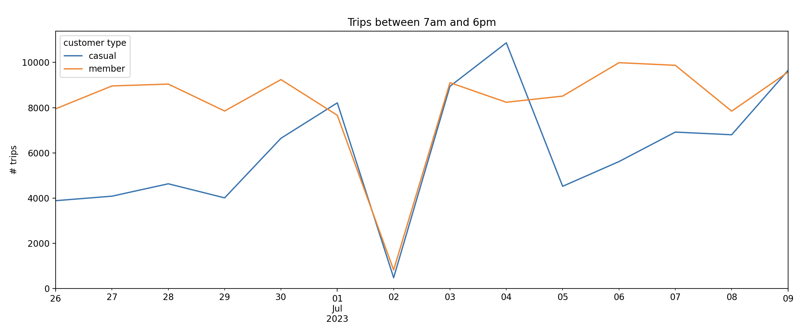

Bikes in Chicago
The Chicago dataset is bike trips in the city of Chicago.
import pandas as pd
import matplotlib.pyplot as plt
from latent_calendar.datasets import load_chicago_bikes
from latent_calendar.plot.elements import CalendarEvent
df = load_chicago_bikes()
df.head()
start_station_name end_station_name rideable_type started_at ended_at member_casual
ride_id
ABF4F851DE485B76 NaN NaN electric_bike 2023-06-30 18:56:13 2023-06-30 19:30:40 member
F123B5D34B002CDB NaN NaN electric_bike 2023-06-30 06:12:31 2023-06-30 06:23:05 member
CA8E2C38AF641DFB NaN NaN electric_bike 2023-06-30 08:28:51 2023-06-30 08:37:45 member
93CCE4EA48CFDB69 NaN NaN electric_bike 2023-06-30 09:09:24 2023-06-30 09:17:41 member
FDBCEFE7890F7262 NaN NaN electric_bike 2023-06-30 16:29:48 2023-06-30 16:38:51 member
This dataset is two weeks of data starting at the end of June 2023. We can easily see this by plotting it as a calendar grouped by the week of year.
# Map the week number to a human readable label
df["week_number"] = df["started_at"].dt.isocalendar().week
# Bit scary but just trying to make a nice label
def create_label(df: pd.DataFrame) -> pd.Series:
first_date = df["first_date"]
last_date = df["last_date"]
return first_date.dt.date.astype(str).str.cat(
last_date.dt.date.astype(str), sep=" until "
)
label = (
df.groupby("week_number")
.agg(first_date=("started_at", "min"), last_date=("started_at", "max"))
.pipe(create_label)
)
df["week_of_year"] = df["week_number"].map(label.to_dict())
df_wide = df.cal.aggregate_events("week_of_year", "started_at")
(
df_wide
.cal.normalize("max")
.cal.plot_by_row()
)
fig = plt.gcf()
fig.suptitle("Two week of bike rides in Chicago")
plt.show()
We are able to understand that the data is two weeks of data starting at the end of June 2023, but also see that there is heavy influence from the July 4 holiday weekend. People have off work and this is reflected in the data.

Though the holiday effect around the 4th, there seems to be a lower volume the Sunday before and after work the day after. Interestingly enough, there was a rain storm on the weekend and another storm the Wednesday the 4th. We can mark this on the calendar for reference.
def create_plot_storms_func(first_storm: CalendarEvent, second_storm: CalendarEvent):
def plot_storms(first_week_ax: plt.Axes, second_week_ax: plt.Axes):
alpha = 0.15
first_storm.plot(ax=first_week_ax, facecolor="blue", alpha=alpha, label="rain storm")
second_storm.plot(ax=second_week_ax, facecolor="blue", alpha=alpha, label="rain storm")
first_week_ax.legend()
second_week_ax.legend()
return plot_storms
first_storm = CalendarEvent(day=6, start=7, end=18)
second_storm = CalendarEvent(day=2, start=17, end=22)
plot_storms = create_plot_storms_func(first_storm, second_storm)
(
df_wide
.cal.normalize("max")
.cal.plot_by_row()
)
fig = plt.gcf()
fig.suptitle("Two week of bike rides in Chicago")
plot_storms(fig.axes[0], fig.axes[1])
plt.show()

Let's break it down further by adding the member_casual column to the aggregation.
df_wide = df.cal.aggregate_events(["member_casual", "week_of_year"], "started_at")
def title_func(idx, row) -> str:
group, week = idx
return f"{group} - {week}"
(
df_wide
.cal.normalize("max")
.cal.plot_by_row(max_cols=2, title_func=title_func)
)
fig = plt.gcf()
fig.suptitle("Two week of bike rides in Chicago")
axes = fig.axes
plot_storms(axes[0], axes[1])
plot_storms(axes[2], axes[3])
plt.show()
We can see that the holiday weekend has heavy volume from the casual riders showing on the Monday and Tuesday of the holiday weekend. Not only that, but the members that use the bikes heavily to commute shift their usage with this holiday too.

The effect of rain can be investigated by sum the trips that happen during the day time. We can do this by creating a segment for each day of the week between the hours of 7am and 6pm, the time of the Sunday storm.
from latent_calendar.vocab import DOWHour
from latent_calendar.segments.hand_picked import create_series_for_range, stack_segments
all_daytime_rain = stack_segments([
create_series_for_range(
start=DOWHour(dow=dow, hour=7), end=DOWHour(dow=dow, hour=18)
).rename(f"all_daytime_{dow}")
for dow in range(7)
])
df_volume = df_wide.cal.sum_over_segments(all_daytime_rain)
These are the row totals between the hours of 7am and 6pm for each day of the week at the same index level as before.
all_daytime_0 all_daytime_1 all_daytime_2 all_daytime_3 all_daytime_4 all_daytime_5 all_daytime_6
member_casual week_of_year
casual 2023-06-26 until 2023-07-02 3887 4086 4634 4012 6647 8213 481
2023-07-03 until 2023-07-09 8946 10868 4523 5616 6920 6802 9643
member 2023-06-26 until 2023-07-02 7949 8960 9043 7852 9242 7663 822
2023-07-03 until 2023-07-09 9105 8239 8511 9989 9873 7846 9573
Visualizing this data, we can see the heavy impact of the Sunday weather for casual riders and members alike but not enough to ruin the holiday weekend.
def replace_index(ser: pd.Series, index: pd.Index) -> pd.Series:
ser.index = index
return ser
start_date = df["started_at"].min().date()
end_date = df["started_at"].max().date()
dates = pd.date_range(start_date, end_date, freq="D")
ax = (
df_volume
.stack()
.unstack(0)
.pipe(replace_index, index=dates)
.plot()
)
ax.set(
ylabel="# trips",
title="Trips between 7am and 6pm",
ylim=(0, None),
)
ax.legend(title="customer type")
plt.show()
